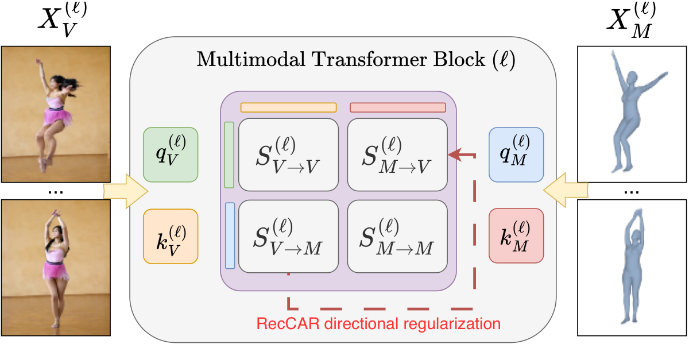
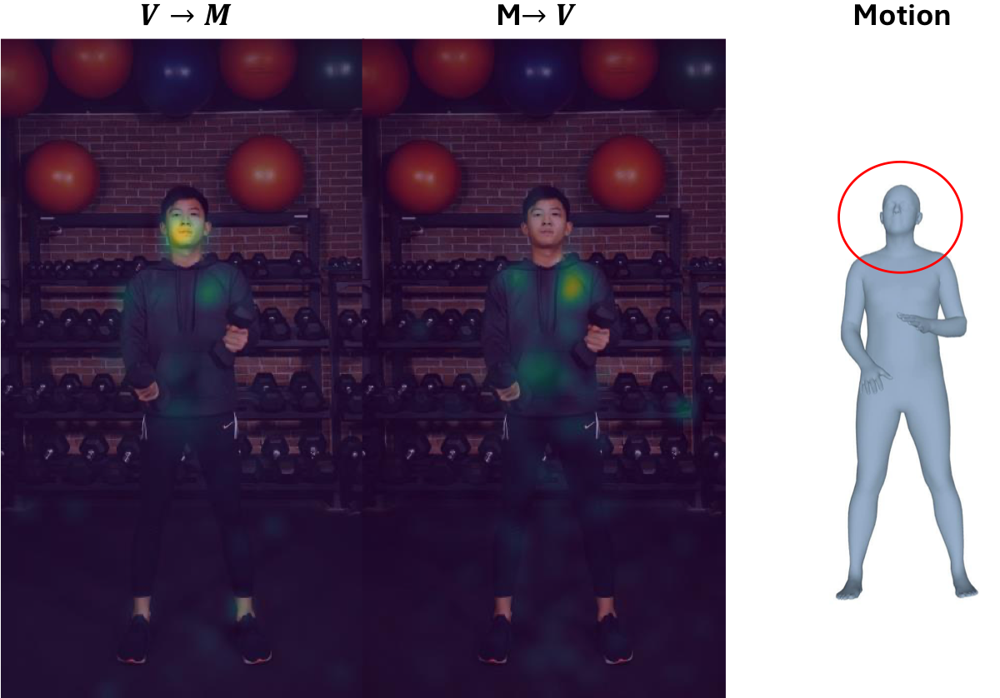

Video is a rich representation of a physical event, capturing appearance, geometry, motion, and temporal evolution. Other modalities, such as 3D body motion or audio, encode narrower aspects of the same event. We find that joint multimodal diffusion transformers exhibit a corresponding asymmetry in cross-modal correspondence: companion modalities develop strong correspondences to video, but the reciprocal correspondences through which they constrain video remain substantially weaker.
We express both directions as comparable correspondence distributions over video tokens and define their disagreement as the reciprocal correspondence gap. We introduce RecCAR (Reciprocal Cross-modal Attention Regularization), a KL regularizer that uses the well-established video-to-modality correspondence as a fixed reference and aligns the weaker modality-to-video correspondence toward it.
Across joint video–motion and video–audio generation, RecCAR improves the Human Anatomy score from 0.69 → 0.75 and reduces audio–video desynchronization from 0.804 → 0.752, while improving overall generation quality.
RecCAR closes the cross-attention gap by transferring learned spatial and temporal structure from the strong Video→Modality pathway to the weaker Modality→Video pathway.
Joint multimodal generators are architecturally bidirectional but functionally asymmetric. Video→Modality correspondences are strong; Modality→Video correspondences remain weak.
We re-normalize both attention directions over video tokens, making them directly comparable. Their KL divergence measures the reciprocal correspondence gap.
We stop-gradient the strong V→M direction and optimize the weaker M→V pathway toward it via a KL loss, using LoRA fine-tuning to preserve the base model.
The same objective applies across substantially different tasks: video + 3D human motion (EchoMotion) and video + audio (LTX-2, JavisDiT++).
Reciprocal cross-modal attention maps should ideally be symmetric: asking "which video pixels correspond to the head token?" ($V \to M$) ought to yield the same information as asking "which pixels does the head token attend to?" ($M \to V$).

RecCAR block architecture. The red path shows the directional KL regularization using fixed Video→Modality correspondence to strengthen Modality→Video.

Attention asymmetry visualization. For a head motion token, $V \to M$ correctly localizes the head, while the reciprocal $M \to V$ direction focuses erroneously on the upper torso.
Comparing EchoMotion (Baseline) on the left against EchoMotion + RecCAR (Ours) on the right across 13 diverse 3D human motion sequences. RecCAR eliminates phantom limbs, anatomically impossible twists, and joint misalignment.
Comparing LTX-2 / JavisDiT++ (Baseline) against + RecCAR (Ours) across 4 audio–video clips. Click the 🔊 button on any player to enable audio playback and hear the cross-modal temporal synchronization!
@article{rahamim2027reccar,
title = {All modalities are equal, but video is more equal:
Closing the Cross-Attention Gap in Joint Video Generation},
author = {Rahamim, Ohad and Samuel, Dvir and Schwartz, Idan and Chechik, Gal},
journal = {arXiv preprint},
year = {2027}
}